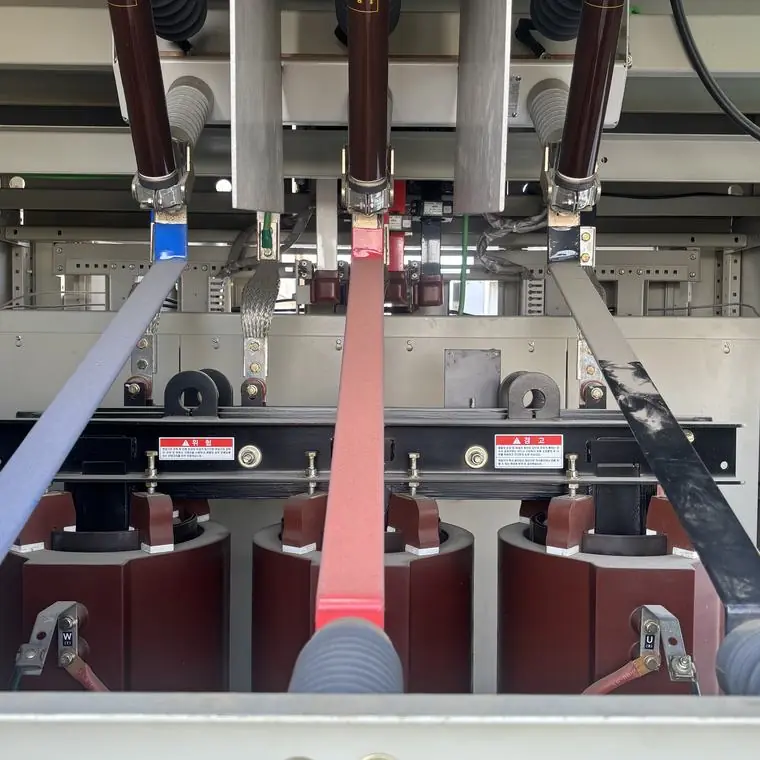
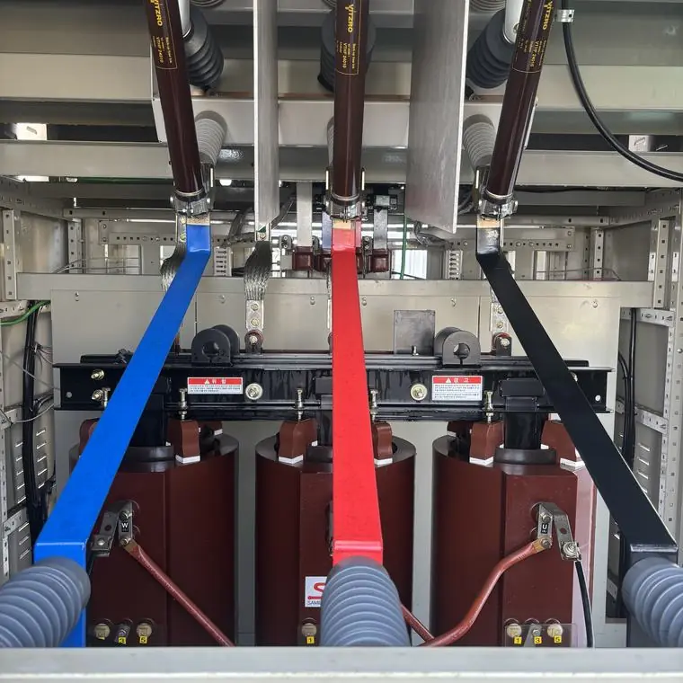

저압용과 고압용 세척 장비는 무엇이 다른가요?
최종 수정 2026-11-09
저압용은 서버, 통신·계측 장비, 제어 보드 같은 정밀 전자 장비에, 고압용은 수전·변전·배전 설비와 중대형 모터 설비에 쓰는 것으로 소개됩니다. 장비 선택은 설비와 오염 정도를 본 업체가 결정합니다.
저압용
정밀 전자 유닛, 제어 판넬, 침수·염수 오염 장비 등에 쓰입니다.
작업 전

작업 후

고압용
수전·변전·배전 설비, 모터, 기계 설비 등에 쓰입니다.
선택은 누가 하나요?
설비를 확인한 시공 업체가 결정하므로 현장 조건을 알려 주세요.
자주 묻는 질문
장비를 제가 골라야 하나요?
아니요. 설비 정보를 알려 주시면 업체가 정합니다.
고압 분사는 설비에 손상을 주지 않나요?
설비 종류에 맞게 압력과 방식을 정하며, 현장 확인이 필요합니다.
설비 사진과 정보를 남기시면 확인 후 견적을 안내해 드립니다.
무료 견적 문의하기이 글은 시공 업체가 공개한 자료와 일반적인 전기설비 관리 상식을 바탕으로 작성했습니다. 설비별 적용 여부와 결과는 현장 확인 후 달라질 수 있습니다.